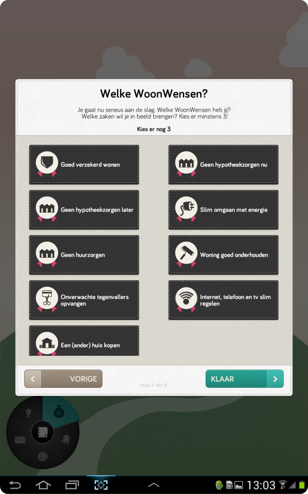
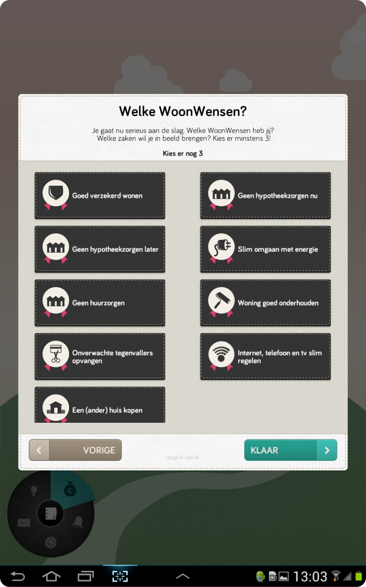

Chatbot European Commission

Interaction Design | Usability | User Experience
With my eye for detail and my user-centric approach,
I am able to translate concept ideas into
user-
friendly designs.


As a UX Designer I was responsible for the UX of a chatbot for the European Commission.
My work started
with extensive user research supported by my wireframes, and ended with
delivering an
interactive prototype for users, which I tested with them.
 


Result: The chatbot was experienced as user-friendly and efficient by customer and users.
Atos had a large digital signage screen developed for ING Belgium, where ING customers can find information
about
their appointment and the bank. They can also schedule an appointment in this so-called Store of The
Future.
I designed the UI for this large digital signage screen, and also tested the UX with users on
large screens.


Result: The digital signage screen can be consulted in the ING offices in Antwerp and Kortrijk.
The UI in
combination with this large screen has been positively experienced by ING customers and employees.
The Ministry of Foreign Affairs was looking for advice for their Travel app, which allows Dutch people to view
current travel information.
In the first version I was responsible for UX advice with mockups. Foreign
Affairs was very satisfied with that UX advice. That's why they asked me again to design the Reis app for
a second version. Below mockups of the first version:


The current version can be downloaded here: https://www.nederlandwereldwijd.nl/reisadvies/download-reisapp
ChangeKitchen wanted to develop an app that allows users to live healthy in a playful way via an app.
I
was responsible for gamification with well-thought-out user interaction.


Result: Delivered the building blocks for ChangeKitchen's health app in the future.
From start to delivery, I was fully responsible for the user experience of a new software platform. It was my goal from the start of this project to shape this Augmented Reality experience for the end users in such a way that it would be user-friendly and usable from its core.

Result: 3D Augmented Reality software, which is real-time used in customer environments by welders & quality controllers at the workplace.
KPN wanted to completely replace its 20-year-old call center & retail software with a contemporary and
user-friendly web interface.
To achieve those wishes, KPN asked me to create a completely new user
experience & wireframes for this.

Result: In the end of the project, the final product was praised several times for its user-friendly and easy
user interface by both
the director of KPN and the end-users of the software.
SNS REAAL asked Atos to develop a game for the iPad (WoonBalans app) to strengthen their brand. The aim of this serious game was to keep housing costs as fun and accessible as possible. I was responsible for the UX Design of this game.


Result: Because the iPad app became a success, SNS also decided to have this app developed by Atos for Android users. Because of the higher resolutions that were required, I delved into vector design and have since mastered this design technique.


Erik plays a pivotal role in exploring new technologies and innovations.
Erik is a great
networker and teamplayer, as he has the ability to connect the right people, technology and project to
power progress!

I worked with Erik on the development of the BZ Reisadvies app. In his role as interaction designer, Erik
has been a great asset to the team.
He is a true perfectionist with great eye for the needs of
our users.
His personality, out of the box ideas, and dedication to our project, were of great
importance to our team.

Erik is always full of new and creative ideas and on top of new innovations in the market. He has an
excellent feeling for user experience.
His enthusiasm and positive attitude is contagiously
and inspiring.
Evenings, weekends, it’s no problem for Erik. Great to work with him!

Erik in our project as an interaction designer and UX specialist proven itself as a true professional.
The result may also be called: Blazing enthusiastic end-users who have nothing but praise
about their new application!
Thanks to the efforts of Erik KPN Mobile made a huge step forward
in the standards of a user-friendly application.

I had the pleasure to work with Erik on several Gamification and Virtual Reality projects.
Without him Gamification wouldn't have been what it is nowadays within Atos.
Teaching our Gamification courses within and outside Atos, is a fun experience and hope to
work with him on even more projects in the future.

I got to know Erik as an enthusiastic and driven person.
With vision and expertise, he is able
to clearly formulate possibilities and perspectives for a specific question and provide advice in a
pleasant manner.

I would like to go into more detail about how my knowledge could relate to your question.
Please
feel free to contact me to see if we can help each other: